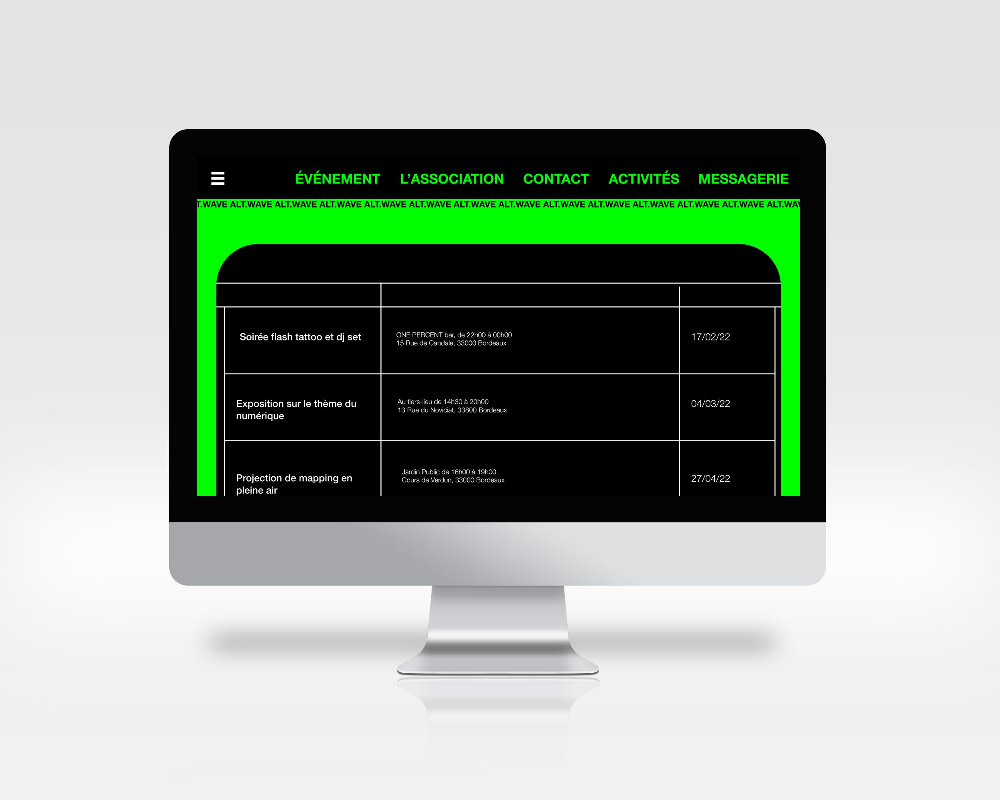
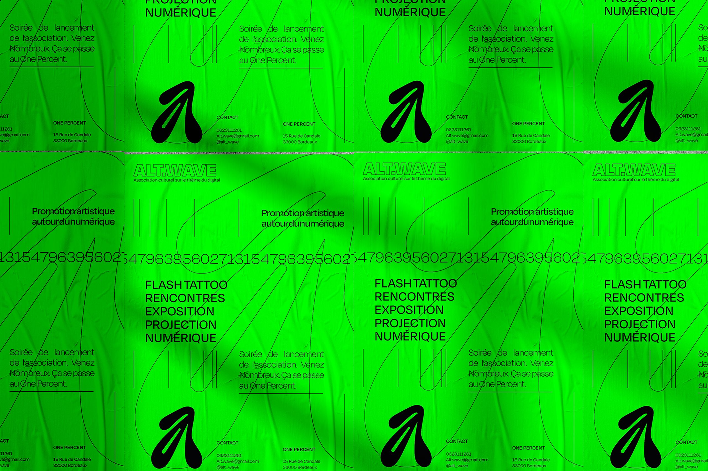
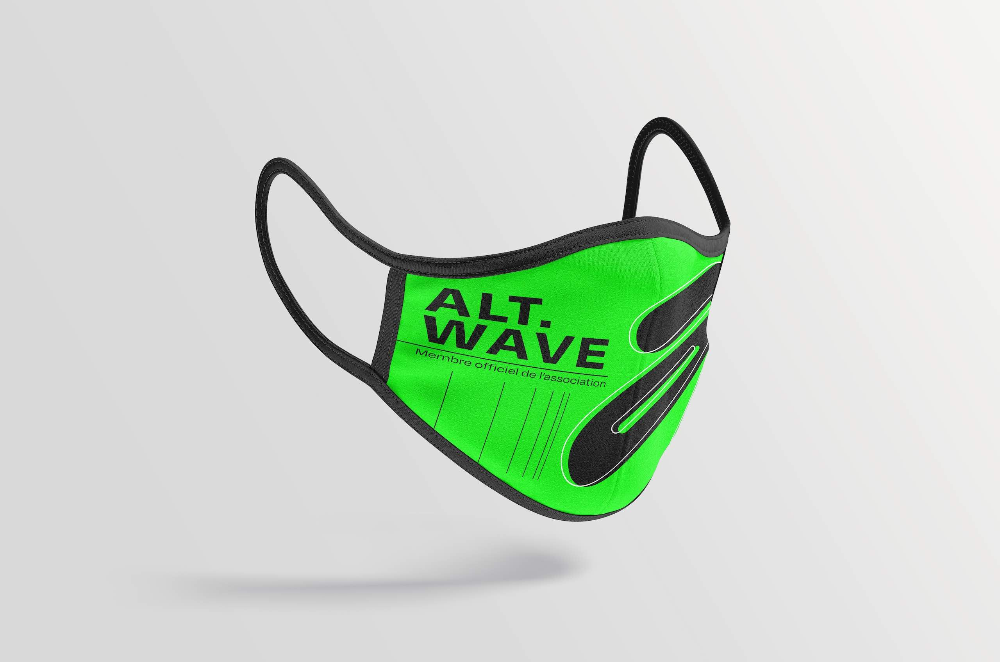
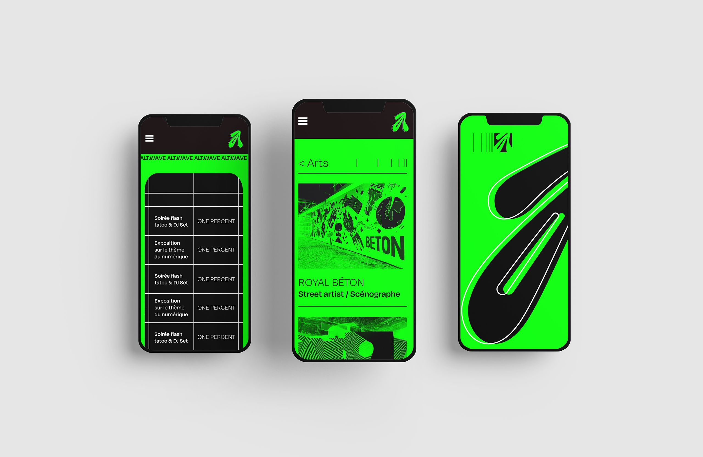
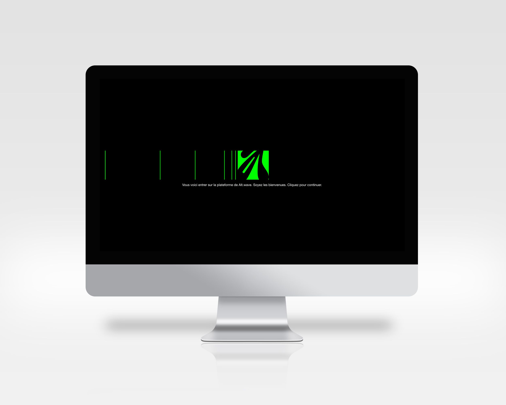
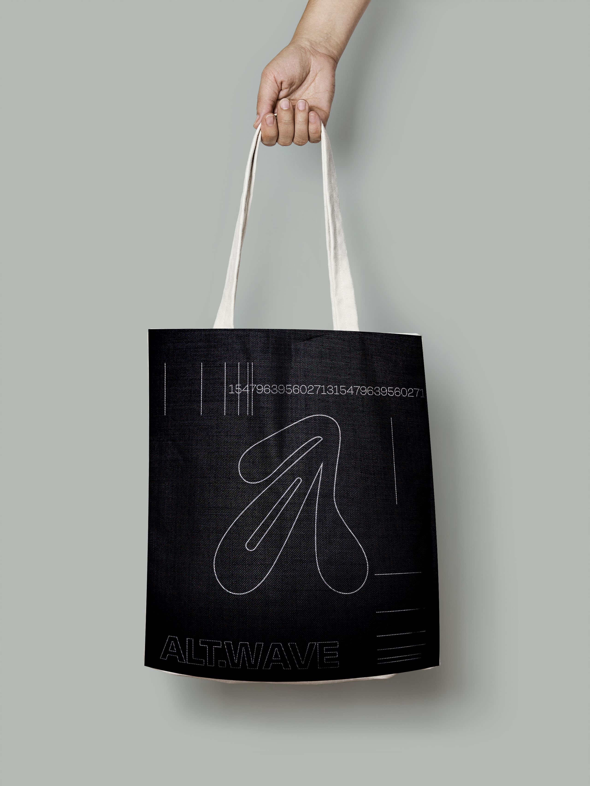
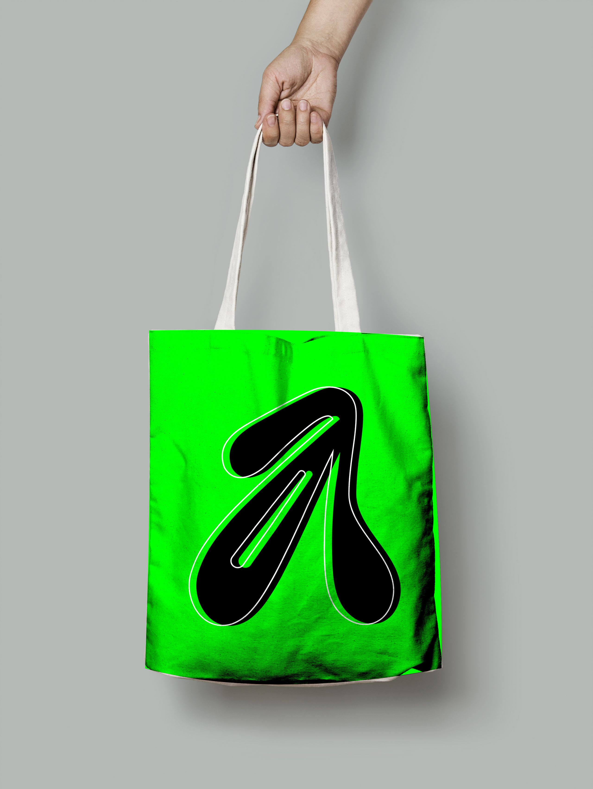

ALT.WAVE
Alt.wave est une jeûne association culturelle fondée en 2020 ayant pour but de promouvoir des artistes musicaux et des arts visuel Bordelais. Mon travail a été de chercher les liens entre culture urbaine et culture numérique qui était les maîtres-mots des artistes visées par cette association. Alt.wave voulait s’établir dans un tiers lieu et aussi accueillir en premier lieu des rappeurs et Dj de la scène underground de Bordelaise ayant pour la plupart des influences de la musique digitales actuel (type beat, trap, afrotrap, synthwave, etc..). Des influences que nous pouvons retrouver chez certains labels musicaux parisiens comme Digital Mundo, Jeûne à Jamais, Bon Gamin, etc... L’identité a découlé de ces idées de ralliement, premièrement des artistes et de l’association, mais aussi des codes de l’urbain et du numérique/ digital. Le logotype inspiré du mouvement du graffiti et de l’art urbain (lettre arrondie, typographie fantaisie) est en lien avec l’idée de tiers lieu et la couleur vert fluorescent vient du côté du numérique et de son esthétique néon et artificiel. Choix qui permet aux artistes de s’identifier rapidement à l’association. Aussi, les supports devaient être simples et facilement reconnaissables dans le flow d’éléments visuel que nous pouvons trouver sur Internet ou dans la rue pour s’y faire une place rapidement.
      